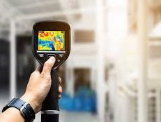
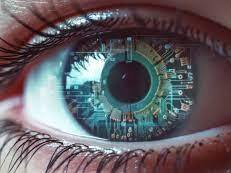

Welcome to AiYogi
Log out
Start Session
Stop Session

Check Thermal
Thermography
Thermal infrared
Thermal energy from skin

Check Visual
Visual structure and element
Explanation and description
Color, line, texture and scale
Check Heartbeat
Pulse rate measurement
Cardiovascular rhythm
Cardiac function assessment
Posture Analysis